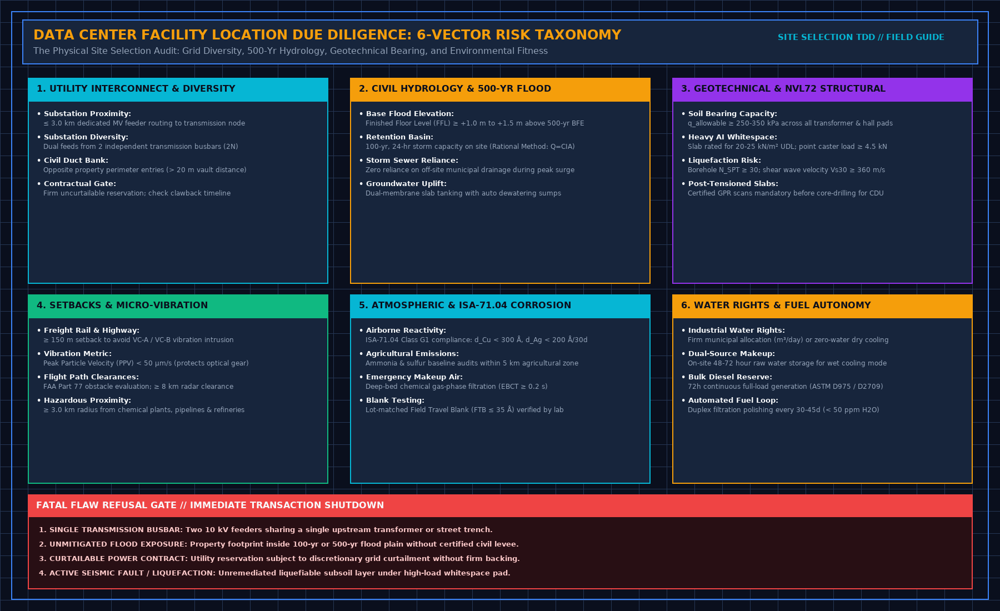
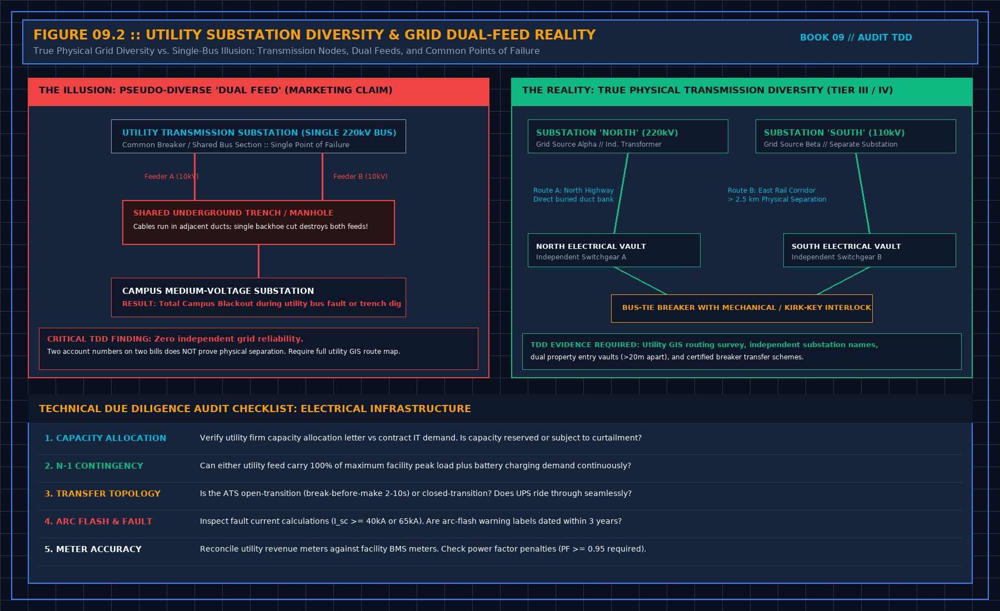
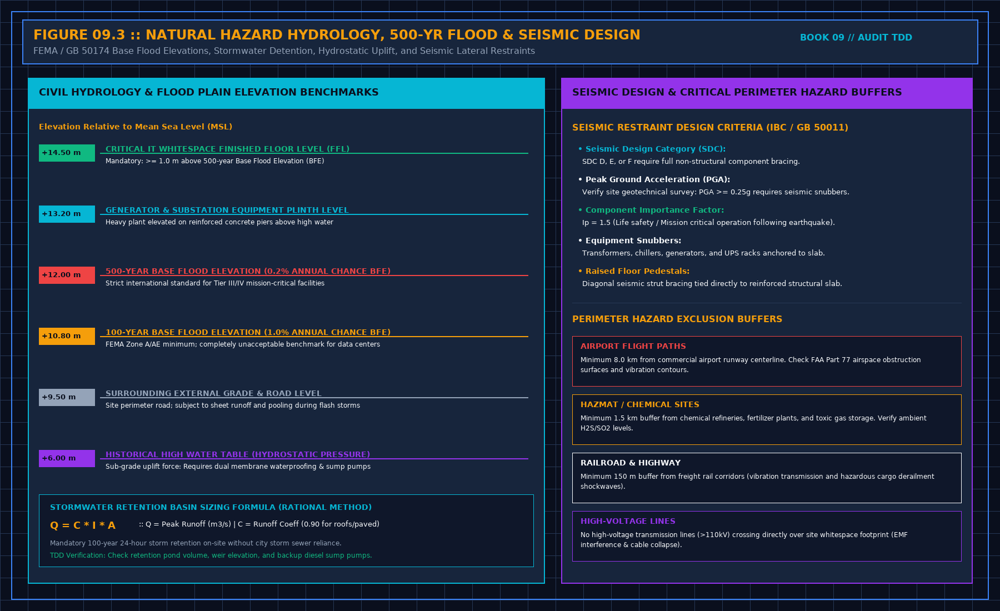

Facility Location Due Diligence Checklist: Data Center Site Selection & Audit Guide
Direct Answer Block: A facility location due diligence checklist is a rigorous engineering framework used in due diligence for infrastructure assets by private equity funds, hyperscalers, and project lenders to physically verify the viability of a parcel before capital deployment. It audits six non-negotiable physical vectors: transmission grid proximity and dual-feed diversity, 500-year civil hydrology, geotechnical soil bearing capacity for heavy AI racks, environmental ISA-71.04 corrosivity, micro-vibration setbacks, and uncurtailable water rights.

When an investment committee evaluates a 100-megawatt AI data center development, the commercial pitch deck always highlights "shovel-ready land," "adjacent power lines," and "strategic fiber corridors."
In the physical world, marketing brochures sell megawatt headlines; real-world physics dictates facility survival.
A parcel situated 500 meters from a transmission corridor may require three years of right-of-way easement litigation to cross a single municipal railway. A site with "ample groundwater" may sit directly downstream from an agricultural ammonia plume that destroys copper heat pipes within eighteen months. And an unmitigated 500-year flood plain will cause commercial lenders to withhold debt syndication or demand prohibitive insurance premiums.
This guide provides the field-tested Facility Location Due Diligence Checklist required to uncover fatal flaws before closing land acquisitions or executing non-refundable power reservations.
1. The Six Core Physical Vectors of Site Due Diligence
A defensible location audit reconciles land title claims against physical terrain, local utility interconnect queue constraints, and multi-physics boundary conditions.

Vector 1: Electrical Transmission Proximity & Diversity Physics
The single largest capital and schedule risk in modern data center development is the utility grid interconnection. An auditor must evaluate four physical criteria:
- Substation Proximity & Feeder Routing (L ≤ 3.0km): Dedicated underground medium-voltage (MV: 10 kV to 35 kV) or high-voltage (HV: 110 kV to 230 kV) feeder runs must be verified. Voltage drop across the interconnect run must satisfy IEEE Std 141:
Where I is rated line current, R and X are cable resistance and reactance per kilometer, and \cosθ is the operating power factor (typically 0.90 to 0.95). If Δ V > 2.5%, upstream transformer on-load tap changers (OLTC) cannot compensate during transient generator synchronizations.
- True 2N Substation Diversity: As shown in Figure 2, developers often market "dual feeds" that actually pull from the same transmission busbar or traverse a single shared street trench. True diversity mandates feeds from two independent transmission substations separated by at least 1.5 km of public rights-of-way.
- Firm vs. Curtailable Power Reservation: Audit the primary Power Purchase Agreement (PPA) or Interconnect Agreement (IA). A utility reservation subject to "discretionary economic curtailment" is a Tier 1 Fatal Flaw.
Vector 2: Civil Hydrology & The 500-Year Base Flood Elevation (BFE)
Commercial real estate typically screens for the 100-year flood zone (1% annual exceedance probability). Mission-critical infrastructure requires adherence to the 500-Year Base Flood Elevation (0.2% annual exceedance probability):

- Finished Floor Level (FFL): All critical whitespace slabs, UPS switchgear, and backup generator fuel points must sit ≥ +1.0m to +1.5m above the 500-year flood elevation.
- On-Site Stormwater Retention (Rational Method): The parcel must retain a 100-year, 24-hour storm surge entirely within on-site detention basins without relying on municipal storm sewers:
Where Q is peak runoff (m³/s), C is the composite runoff coefficient (C ≈ 0.90 for impervious roofs and concrete yards), I is maximum rainfall intensity (mm/hr), and A is the catchment surface area (m²).
- Hydrostatic Uplift & Groundwater Depth: If historical geotechnical groundwater is within 2.0 meters of planned slab depth, the foundation design must incorporate dual-membrane bentonite tanking and emergency-powered dewatering pumps.
Vector 3: Geotechnical Bearing Capacity & AI Floor Loads
High-density liquid-cooled clusters (such as NVIDIA NVL72 architectures weighing up to 1,800 kg per rack footprint) impose unprecedented static and dynamic point loads on the soil subgrade:
- Allowable Bearing Capacity (qa): The subsoil must provide qa ≥ 250to350kPa under footing pads to prevent differential settlement across continuous chiller piping headers:
Where FS ≥ 3.0 is the geotechnical safety factor, c is soil cohesion, γ is effective unit soil weight, and Nc, Nq, N_γ are Terzaghi bearing capacity factors.
- Liquefaction & Shear Wave Velocity: Standard Penetration Test resistance must show NSPT ≥ 30, with average shear wave velocity in the upper 30 meters Vs30 ≥ 360m/s (Site Class C or better under ASCE 7-22).
- Post-Tensioned (PT) Slabs: If acquiring an existing shell, verify whether floor slabs are post-tensioned. Core-drilling through PT slabs for CDU coolant supply headers requires destructive x-ray or Ground Penetrating Radar (GPR) certification; severing an unbonded tendon destroys structural bay integrity.
Vector 4: Micro-Vibration & Transportation Setbacks
High-frequency optical transceivers, silicon photonics, and precision hard disk arrays suffer degraded performance or premature laser misalignment when exposed to low-frequency ground vibrations from freight rail corridors or multi-lane highways:
Where PPV is Peak Particle Velocity (μm/s), r is radial distance from the vibration source, η is the geometric spreading coefficient (≈ 0.5 for surface Rayleigh waves), and α is the soil damping coefficient (0.005to0.02m-1).
| Environmental Threat | Minimum Mandatory Setback | Governing Standards & Acceptance Corridor |
|---|---|---|
| Freight Rail Corridor | ≥ 150m (500 ft) | Velocity Criteria VC-A (PPV < 50\ μm/s RMS, 1–80 Hz) |
| Multi-Lane Heavy Highway | ≥ 75m (250 ft) | Continuous ground vibration PPV < 100\ μm/s |
| Commercial Airport Runway | ≥ 8.0km (5 miles) | FAA Part 77 Obstruction Surfaces; electromagnetic radar interference |
| Chemical Plant / Refinery | ≥ 3.0km (2 miles) | Toxic gas dispersion modeling; explosive blast overpressure (< 3.5kPa) |
| High-Pressure Gas Pipeline | ≥ 100m (330 ft) | Pipeline rupture thermal radiation buffer (API RP 1162) |
Vector 5: Atmospheric Corrosivity & ISA-71.04 Environmental Chemistry
Modern server hardware utilizing lead-free solder (RoHS) and silver-plated immersion fittings is vulnerable to micro-corrosion in contaminated ambient environments.
- Reactivity Monitoring: A 30-day site exposure test using copper (Cu) and silver (Ag) corrosion coupons per ANSI/ISA-71.04-2013:
- Class G1 (Mild - Mandatory): Normalized corrosion film growth rate must satisfy:
- Proximity Hazards: A parcel located within 5 km of active agricultural livestock operations (ammonia NH3), pulp mills, or wastewater treatment plants (H2S > 3ppb) requires multi-stage deep-bed chemical filtration with an Empty Bed Contact Time (EBCT ≥ 0.2s) for all emergency makeup air.
Vector 6: Water Rights, Municipal Effluent, and CDU Heat Rejection
Even as AI facilities pivot toward direct-to-chip liquid cooling, the secondary heat rejection loop requires reliable thermal sinks:
- Firm Industrial Water Allocation: Evaporative cooling towers for a 50 MW critical IT load consume up to 1,500 to 2,500 m³ of water daily during peak summer wet-bulb conditions. The audit must inspect the municipal water supply utility permit for firm, uncurtailable industrial quotas.
- On-Site Autonomy: If evaporative cooling is utilized, the site layout must incorporate a minimum of 48 to 72 hours of on-site raw water storage tanks.
- Alternative Dry Cooling Footprint: If municipal water rights are unobtainable, the parcel must have sufficient flat acreage to host massive adiabatic dry-cooler arrays without recirculating hot exhaust air into the building air intake louvers.
2. The Comprehensive Facility Location Audit Checklist
Use this field audit matrix during the initial desktop review (Phase 1) and physical site reconnaissance walk (Phase 2):
| Vector Category | Field Audit Checkpoint | Engineering Standard / Threshold | Fatal Flaw (Deal Breaker) Trigger |
|---|---|---|---|
| 1. Electrical Grid | Dual transmission substation connectivity | IEEE 141; 2 independent substations, dual entries > 20 m apart | Single busbar or shared utility trench off-site |
| 1. Electrical Grid | Firm uncurtailable capacity reservation | Executed Interconnect Agreement (IA) with confirmed delivery date | Curtailable service or speculative queue position > 36 months |
| 2. Hydrology & Civil | FEMA / Civil 500-Year Flood Plain | Finished Floor Level (FFL) ≥ +1.0 m above 500-year BFE | Property footprint in 100-yr or 500-yr zone without levee |
| 2. Hydrology & Civil | On-site stormwater detention volume | 100-year, 24-hour storm surge contained on site (Q = C × I × A) | Zero detention capacity with restricted city outfall |
| 3. Geotechnical | Soil allowable bearing capacity (qa) | qa ≥ 250to350kPa under whitespace footings | Peat, unengineered fill, or collapsible subsoil layer |
| 3. Geotechnical | Seismic liquefaction potential | NSPT ≥ 30, Vs30 ≥ 360m/s (ASCE 7-22 Class C) | Active fault trace < 200 m or high liquefaction susceptibility |
| 4. Vibration & Safety | Freight rail / highway vibration setback | Distance ≥ 150 m; PPV < 50 μm/s RMS (VC-A) | Freight rail < 50 m with heavy axle vibration > 150 μm/s |
| 4. Vibration & Safety | Hazmat & chemical plant proximity | Buffer ≥ 3.0 km; zero high-pressure gas lines on property | High-pressure transmission pipeline crossing parcel whitespace |
| 5. Environmental | ISA-71.04 ambient air corrosivity | Class G1: Cu < 300 Å/30d, Ag < 200 Å/30d (lot-matched blank) | Class GX (> 2000 Å/30d) due to adjacent wastewater plant |
| 6. Water & Fuel | Industrial water allocation / discharge | Firm municipal allocation or verified dry-cooler yard footprint | Groundwater moratorium with zero wastewater sewer capacity |
| 6. Water & Fuel | Bulk standby diesel fuel autonomy | 72h continuous full-load generation on site (ASTM D975) | Municipal restriction limiting on-site fuel storage < 24 hours |
3. Four Fatal Flaws That Kill a Land Acquisition Deal
If an audit uncovers any of the following four conditions that cannot be mitigated by legal covenants or capital expenditure escrow holdbacks, the Independent Engineer must issue a Refusal Memorandum:
- The Shared Utility Transmission Bus: Two 35 kV medium-voltage lines entering the campus from opposite gates but originating from the exact same primary 110 kV transformer or bus section at the utility substation. A bus failure shuts down both feeds simultaneously.
- The Unmitigated 500-Year Flood Basin: A building footprint that encroaches into a documented 500-year alluvial floodplain where municipal zoning prohibits the construction of a certified perimeter levee or concrete floodwall.
- Curtailable Power Discretion: A power supply reservation contract containing utility "call-back" or "economic curtailment" clauses where the data center can be forced offline during regional summer grid peaks.
- Active Fault Traces and Liquefiable Subgrades: Unremediated marine clay or saturated silty sand subsoils within 200 meters of an active Holocene earthquake fault, where ground shaking would induce differential building settlement exceeding 1/500 across structural spans.
Frequently Asked Questions (FAQ)
What is the difference between a Phase I ESA and Facility Location Due Diligence?
A Phase I Environmental Site Assessment (ASTM E1527-21) strictly audits historical contamination, hazardous chemical storage, underground fuel storage tanks, and Superfund liabilities. Facility Location Due Diligence (ASTM E2018 / IEEE 141) evaluates the entire operational physics of the site: electrical grid reliability, substation diversity, 500-year hydrology, structural soil bearing capacity, micro-vibration, and cooling water quotas.
Why is the 500-year flood plain mandatory for data centers instead of the 100-year flood plain?
A 100-year flood plain represents a 1.0% annual chance of flooding, which translates to an unacceptable ~26% cumulative risk of flooding over a standard 30-year infrastructure financing loan term. The 500-year flood plain represents a 0.2% annual chance (~6% over 30 years), which aligns with the mission-critical uptime requirements demanded by institutional debt syndicates and hyperscale tenant SLAs.
How do you verify true transmission substation diversity before ground-breaking?
Review the certified Single-Line Diagram (SLD) from the regional transmission system operator (RTO/ISO) and physically walk the utility rights-of-way. Trace the feeder routes from the data center property boundary back to the physical utility substations to ensure the cables do not share manholes, duct banks, utility bridges, or a single common busbar section.
How does high-density AI rack deployment (e.g., NVL72) alter site selection criteria?
Legacy data centers were designed for uniform floor loads of 8 to 12 kN/m² with standard civil subgrades. An NVL72 liquid-cooled supercluster weighs up to 1,800 kg per rack, creating point caster loads exceeding 4.5 kN and requiring structural floor capacities of 20 to 25 kN/m². This mandates higher subsoil bearing capacity (qa ≥ 250kPa) and strict avoidance of post-tensioned slabs that prevent core-drilling for liquid cooling headers.
The Book Bridge
A technical due diligence site visit is where multi-million-dollar land acquisition terms are made or abandoned. For the complete physical audit protocol—including unannounced utility walk procedures, sample size calculators, single-line reconciliation sheets, and legal refusal templates—consult Walk a TDD: Technical Due Diligence Physical Site Audit by Tristan.
Also explore our companion field guides: